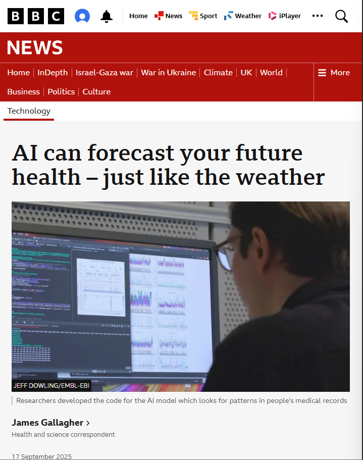

Can we trust AI in Healthcare?
This website forms part of a university research project exploring the public's perception of Artificial Intelligence (AI) within healthcare.
The content presented on this webpage is intended to provide context and encourage reflection and discussion during the completion of the interview/survey you have kindly chosen to take part in.
Please note that any real experiences shared on this web page have been anonymised for privacy and confidentiality purposes.
If you have any queries regarding the content on this web page or the study being carried out, then please do not hesitate to raise these to the lead researcher, project supervisor or the Head of the Department of Computing and Communicaitons at Lancaster Univeristy via the details provided to you in the Particpant Information Sheet.
How to Use This Website
- Read through each section at your own pace.
- Consider how the content shown to you makes you feel about AI in Healthcare as you go through.
- It is important to remember that there are no right or wrong answers!
- Your views will be explored further in the interview/survey.
Before You Start
Ask yourself, "What are my current feelings towards AI in Healthcare?"
"Do i feel positive, is there uncertainty, or outright concern?"
This website will provide real-life experiences, study’s and recent news coverage/developments to alleviate fears and negative perceptions of Artificial Intelligence being integrated into your Healthcare institution.
Studies & News Coverage
A study carried out by The Health Foundation in July of 2024 produced findings from the public and NHS staff relating to their opinions on the use of AI for Administrative purposes, below shows the results of this.
What does this show?
- Srong support for its use in both patient care and administrative purposes from NHS staff, not as much as the public however. Potentially implying a lack of knowledge on the subject.
- Administrative tasks are more preferable for use of AI by both groups. Especially for NHS staff whos high workload is well documented.
- Administrative tasks have less impact on a persons health therefore it is a good place to begin implementation.
- What is your opinion on AI in NHS administrative tasks as well as patient care?
An article by the BBC showcased how researchers created a AI model that can forecast a persons future health. Just like the weather, the technology has learned to pot patterns in peoples medical records to predict risks of 1,231 diseases to be exact. It is being trialed in Denmark with success and it has had the best results predicting diseases such as type 2 diabetes, heart attacks and sepsis, all of which are life-threatening.
